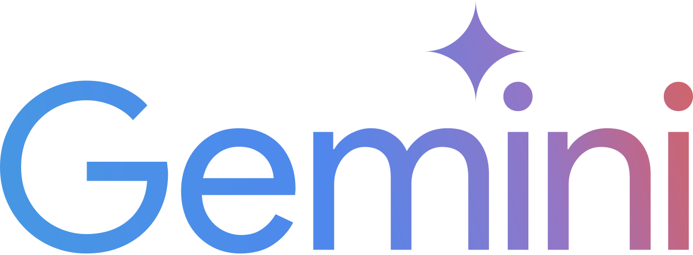
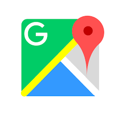

Build trust first — citizens experience reliable, visible service before any change to fare or payment systems
Lower risk — no dependency on payment infrastructure, card issuance, or cash handling in phase one
Clear value — “when does my bus come?” is answered; operational and policy benefits are immediate
Foundation for later — robust data and operations make future ticketing, booking, or ancillary models easier and more credible
Technology & capability credibility
Cursor — AI-assisted development for rapid prototyping and maintainable code
Gemini — multimodal AI for data and workflow integration
Google Maps API — mapping, routing, and location services at global standard
Starlink — connectivity options for remote or backup links
Emphasis: rapid prototyping, scalability, and access to global-standard technology
Partners and direct access
Direct exposure and collaboration with global-standard technology partners
Cursor · AI-assisted development

Gemini · Multimodal AI

Google Maps API · Mapping & routing
Starlink
Connectivity
Public value & business opportunities
Public value: Predictable journeys, less waiting, better information; data for evidence-based policy and subsidy design
Operator value: Better fleet utilisation, fewer complaints, data for schedule and route improvements
Ancillary opportunities: Advertising at smart stands; premium or branded services; data products (anonymised) for urban planning; future integration with ticketing and booking when appropriate
Pilot rollout vision
Phase one (pilot): One or two high-demand corridors; transponders on participating buses; smart stands at key stops; central dashboard for operators and regulators
Metrics: Punctuality, headway regularity, passenger feedback, and data quality
Scale: Expand to more routes and operators based on pilot results and policy priorities
Governance: Clear roles for Ministry, regulator, and operators; data ownership and use agreed upfront
Next steps & collaboration ask
Dialogue: Willing to work with the Sub-Committee, Ministry, and transport authorities to refine the proposal and align with existing strategies
Pilot design: Contribute to corridor selection, success criteria, and evaluation framework
Technical input: Share experience with transponder systems, central platforms, and smart displays; connect with suitable technology and implementation partners
Timeline: Ready to support a structured pilot once policy and institutional arrangements are agreed
Thank you
Thank you to the Parliamentary Sub-Committee and Deputy Minister Chathuranga Abeysinghe for the opportunity to submit this proposal.
Rasal Jayasinghe
Cybersecurity graduate · Tech podcast host (Asia & Sri Lanka)
Open to follow-up discussion and collaboration with the Ministry and transport authorities.